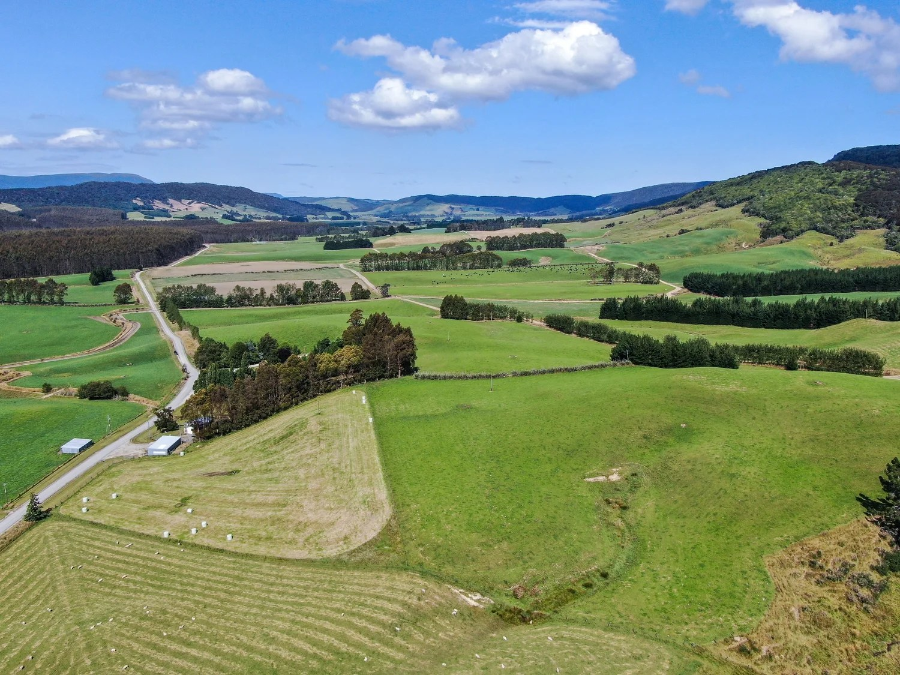
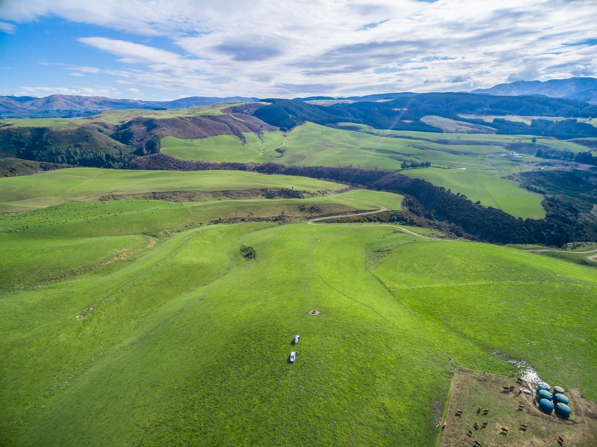
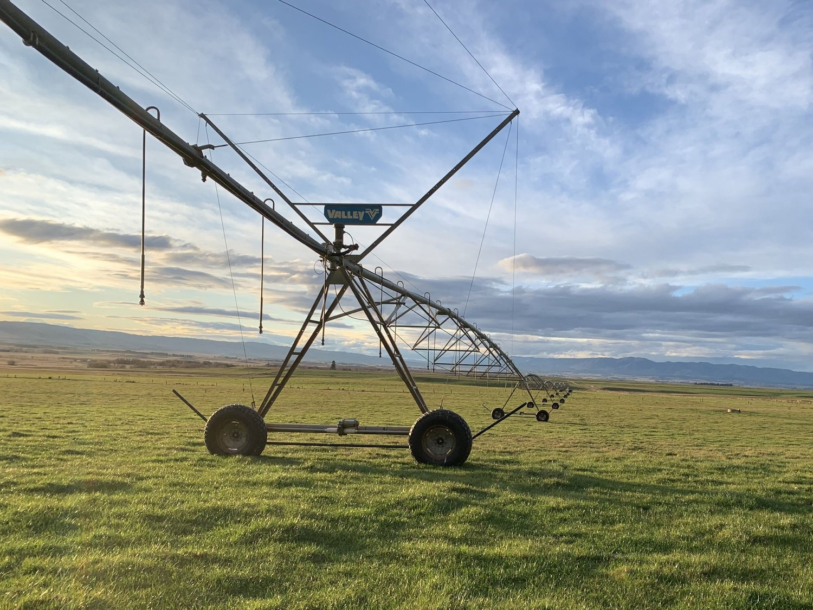
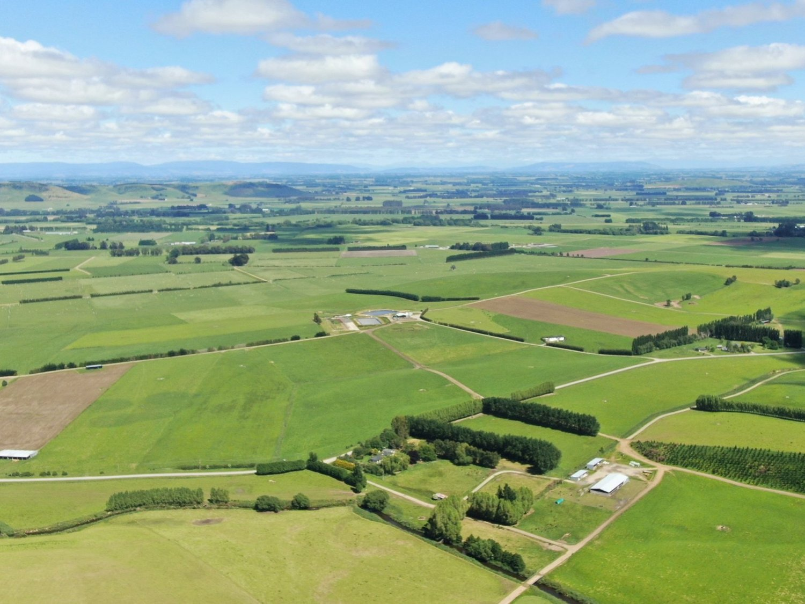
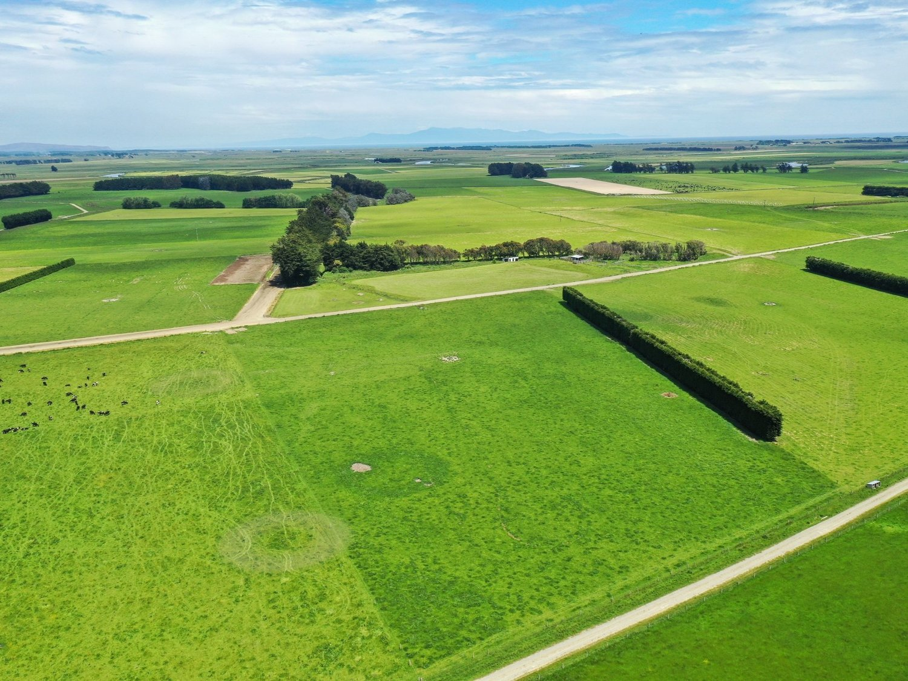
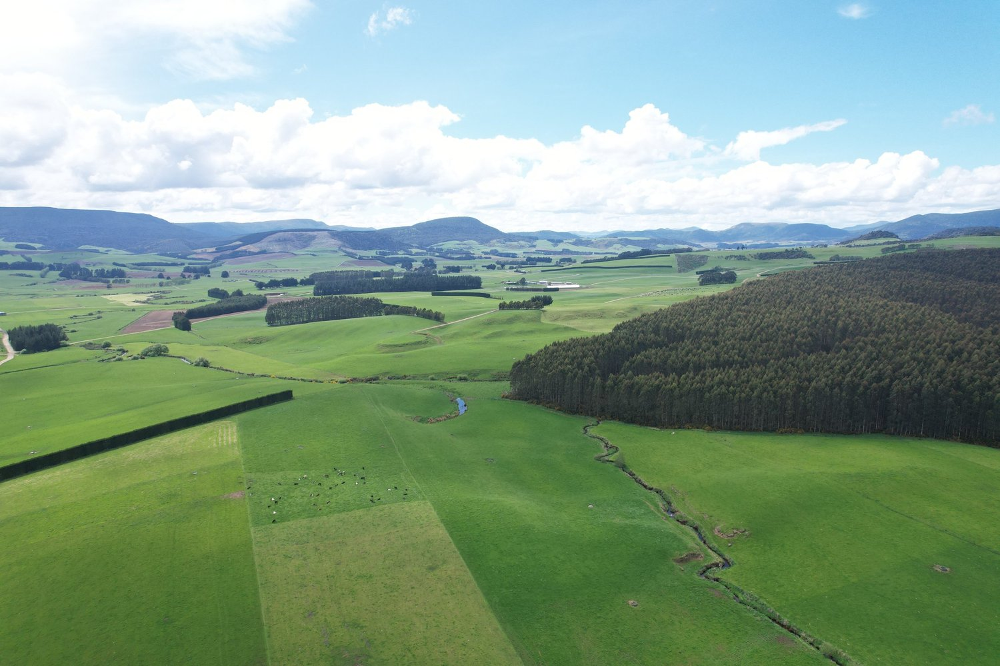
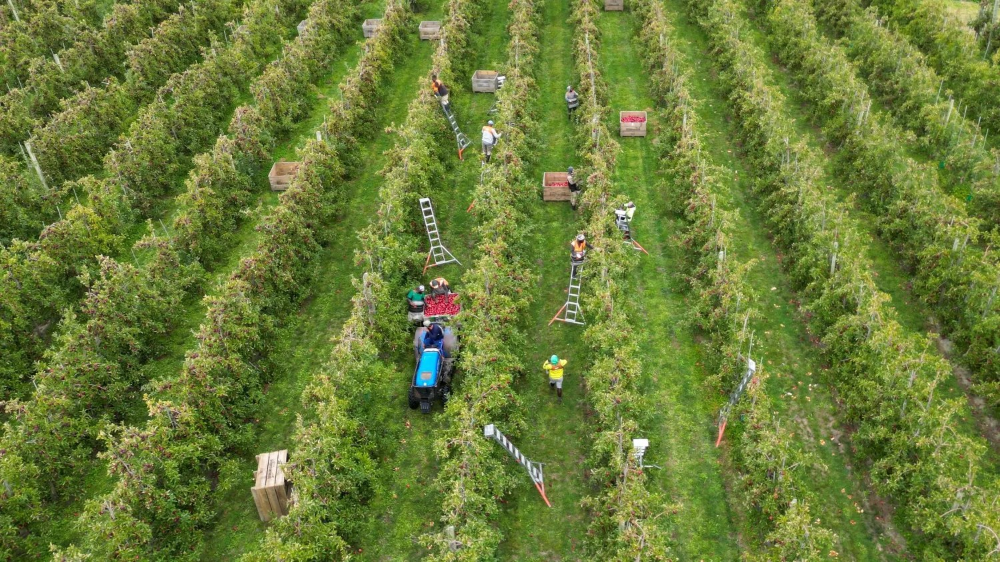

Mokoreta Farm
Southland
- Sector
- Pastoral
- Acquired
- March 2021
- Size
- 456 ha
Every property NZ Rural Land Co (NZL) owns, from dairy land in Southland to forests in the central North Island and orchards in Hawke’s Bay.
WALT (years)
Number of tenants
Hectares of rural land owned
Acres of rural land owned
WALT is the weighted average lease term: the average time left to run on our leases.
(25% interest held by private markets investment manager Roc Partners)

11,445 ha
28,281 acres
Dairy and support
5,488 ha
13,561 acres
Forestry and carbon
144 ha
356 acres
Apples and pears

Southland

Canterbury

Canterbury

South Canterbury

Canterbury

South Canterbury

Canterbury

Canterbury

Canterbury

North Otago

Canterbury

Canterbury

Canterbury

Otago

Canterbury

Otago

Otago

Otago

Southland

Southland

Manawatū-Whanganui

Manawatū-Whanganui

Manawatū-Whanganui

Manawatū-Whanganui

Otago

Canterbury
Hawke’s Bay

Every property is leased to an operator who specialises in what it grows, from milk to
timber to apples.
New properties, company news and market recaps,
sent straight to your inbox.